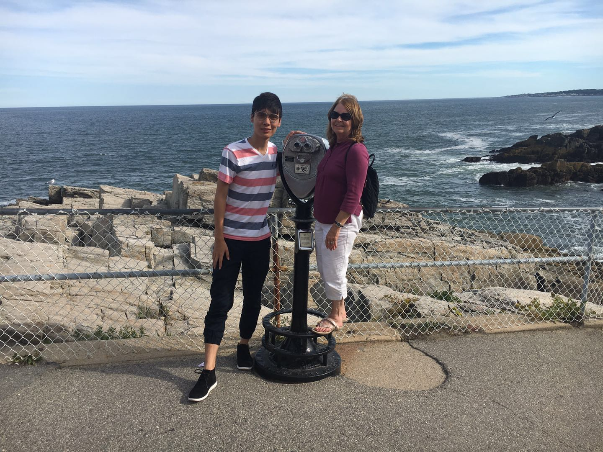
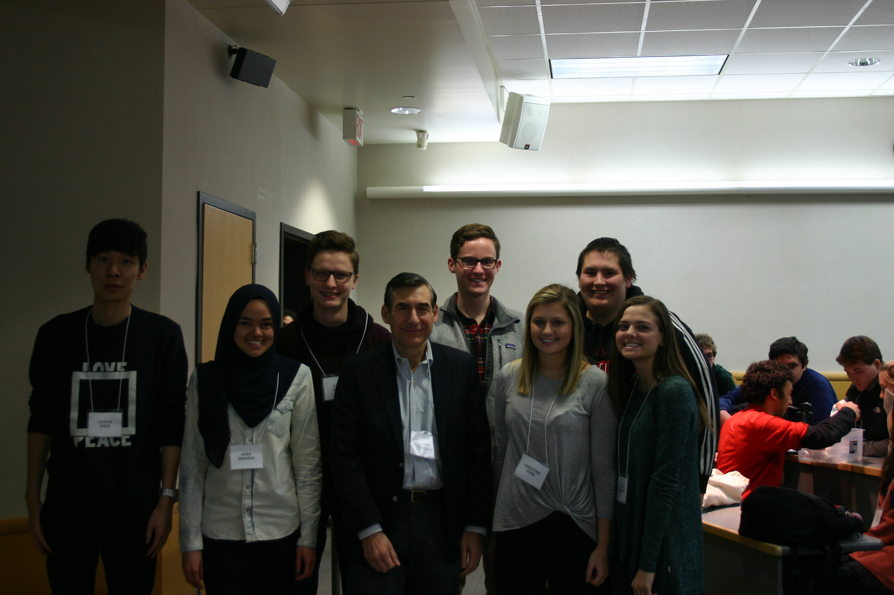
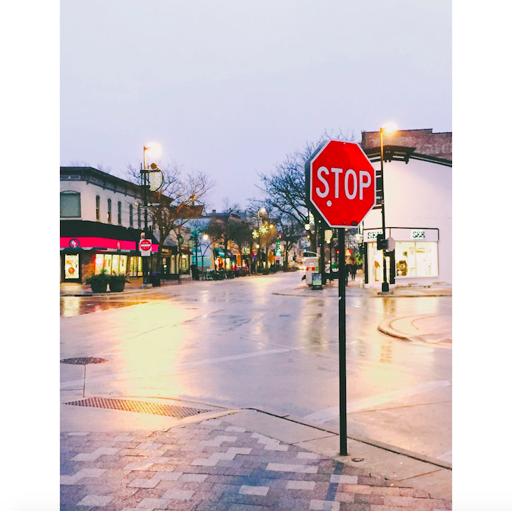
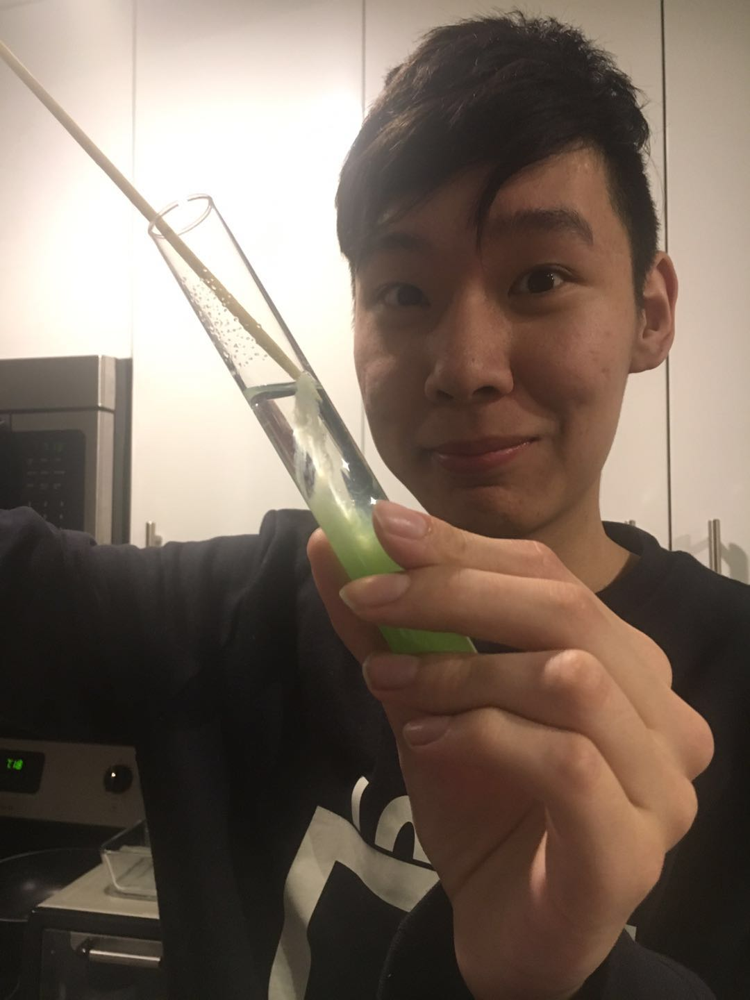
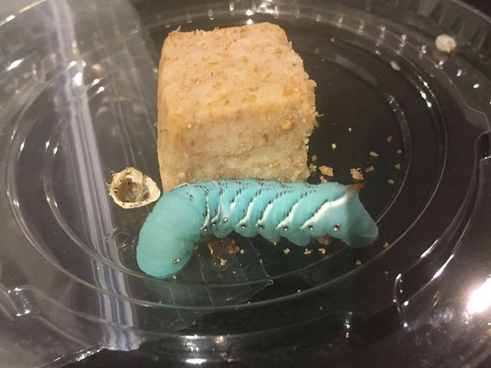

陈浚杰 · b. Junjie, goes by
Caspar Chen.
- I am a data engineer at Taskrabbit.
- I grew up in China and now live in Fremont, CA.
- I studied applied math at UW–Madison and statistics at Columbia.
- I spent 2020–2021 working on Apple Maps data quality.
- I write a lot of SQL, plenty of Python, and the occasional R notebook.
- I'm fluent in Snowflake, dbt, and Airflow 3.
- I think the best dashboards are the ones nobody has to defend.
- I read actuarial textbooks for fun. I know how that sounds.
- I shoot 35mm in my spare time — some of it lives in the gallery.
- I have a résumé if you want the formal version.
A quiet manifesto, more or less.
I'm a data engineer with a statistician's nervous system. I trained as an applied mathematician at Wisconsin–Madison, then took the M.A. in Statistics at Columbia, then promptly discovered that most of the interesting problems live downstream of the model — in the joins, the late-arriving rows, the half-truths in a marketing event spec.
Today I work on Taskrabbit's data platform. That means designing dbt models that hold up under real traffic, scheduling Airflow DAGs that fail loudly instead of silently, and writing the kind of SQL that the next engineer actually wants to read.
Off the clock: long-exposure photography, the occasional R notebook, and a stubborn habit of reading actuarial textbooks for fun.
- Based Fremont, California
- Role Data Engineer · Taskrabbit
- Speaks 中文 · English · un poco de Español
- Reach jchen@taskrabbit.com
Things I’ve built, broken,
or quietly improved.
-
01 / 05 Pipelines Event Lakehouse, end‑to‑end.
Built and maintain the bronze→silver→gold layer of Taskrabbit's analytics warehouse: Snowflake, dbt, and Airflow 3, with contracts and tests so downstream dashboards don't quietly lie. Authored over 200 dbt models and the macros that keep them DRY.
- Snowflake
- dbt
- Airflow 3
- Python
-
02 / 05 Modeling Marketplace economics, demystified.
Designed the canonical "task lifecycle" fact table — one row, one task, every state transition — so growth, ops, and finance finally agree on what a completed booking is. Saved roughly a meeting a week, which is the real ROI.
- SQL
- dbt
- Looker
-
03 / 05 Statistics Bootstrap variance estimators in R.
Graduate work at Columbia: empirical and parametric bootstrap estimators for the variance of insurance claims, with confidence intervals validated against simulated Poisson processes. The math still pays rent.
- R
- Bootstrap
- Simulation
-
04 / 05 Actuarial Whole‑life insurance loss distributions.
Simulated the loss‑at‑issue random variable for a fully discrete whole‑life policy under Makeham mortality, reconciled against the MLC Illustrative Life Table. The kind of project that quietly teaches you to mistrust closed‑form answers.
- Excel
- VBA
- Survival models
-
05 / 05 ML · for fun Neural style transfer, on a Flask.
A small web app that ports the Gatys et al. style‑transfer algorithm into a Flask front end. More an exercise in deployment plumbing than novel research — and a reminder that GPUs are humbling.
- PyTorch
- Flask
- Docker
A working chronology.
-
2021 — present
Data Engineer · Taskrabbit
Own large swaths of the analytics data platform. Build dbt models, Airflow DAGs, and the contracts between them. Mentor junior engineers, run on‑call rotations, and occasionally write the dashboard nobody asked for but everyone uses.
-
2020 — 2021
Data Analyst, Maps · Apple
Worked on Apple Maps data quality — surfacing routing anomalies, POI coverage gaps, and the kind of ground‑truth discrepancies that you only notice when a user reports them. Where I learned that "the data is correct" is always a time‑bounded claim.
-
2018 — 2020
M.A. Statistics · Columbia University
Coursework in advanced data analysis, statistical machine learning, time series, and nonparametric methods. Thesis‑adjacent work on Framingham heart‑study data. Graduated with a 3.43 GPA and a healthy respect for assumptions.
-
2014 — 2018
B.S. Applied Mathematics · UW — Madison
Actuarial emphasis with a Certificate in Business. Passed early SOA exams, ran the actuarial student club, and discovered that I liked the data more than the reserves.
Tools I reach for without thinking.
Warehouse & modeling
- Snowflake
- dbt (Core & Cloud)
- PostgreSQL · MySQL
- Looker · Tableau
Orchestration
- Apache Airflow 3
- AWS (S3 · Lambda · EC2)
- Docker
- GitHub Actions
Languages
- SQL — fluent
- Python — daily
- R — for stats
- Bash & Make — quietly
Recent certifications
- Astronomer · Airflow 3 DAG Authoring — 2026
- Astronomer · Airflow 3 Fundamentals — 2026
- AWS Certified Cloud Practitioner — 2025
- TestDome SQL Certification — 2020
Outside the terminal.




